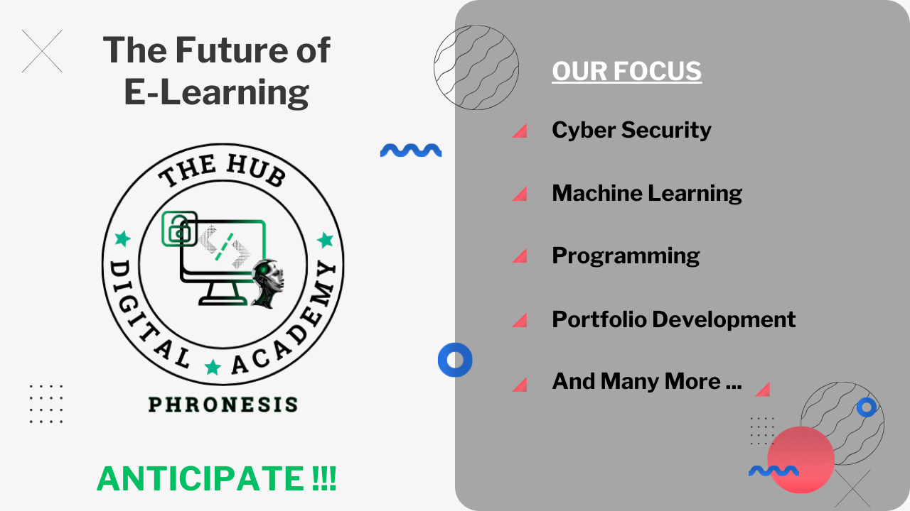

Clement Heanampong
Hello! My name is Clement. I am a Research and Teaching Assistant at Kwame Nkrumah University of Science and Technology's Department of Telecommunication Engineering, College of Engineering.. I research Security and Federated learning in wireless communication particularly 5G and B5G at Communications, Networking and Signal Processing Laboratory (CSM-LAB) where I am advised by Prof. James Dzisi Gadze. I completed my B.Sc in Telecommunication Engineering at KNUST
My research focuses on Cybersecurity; Network, IoT, and Application Security; Reverse Engineering; Security in wireless communication; Blockchain Technology; Applied ML/AI and federated learning focuses on the physics of communication theory. I previously worked on anomaly detection in 5G IoT environment using federated learning during my undergraduate study. Besides research, I like playing and watching football, listening to security podcasts, and playing CTFs
Overview
{kind=link}
10/2024
{kind=link}
We roll out new student entries for our non-profit E-Learning platform: TheHub Digital Academy.
Research Publications
Federated Learning in Wireless Communications
Anomaly Detection in 5G Networks using Federated Learning
Clement Heanampong, Nana Akua Amoabea Osafo, Debrah Desmond, and James Dzisi Gadze (Advisor), 2024.
Slides
Abstract
The introduction of 5G technology has dramatically enhanced global connectivity, facilitating the widespread adoption of Internet of Things (IoT) devices. However, this interconnected ecosystem also introduces new security challenges that exploit vulnerabilities and disrupt infrastructure. Although Machine Learning (ML) techniques were introduced for anomaly detection, they face challenges related to data privacy due to their centralized nature and scalability due to the distributed nature of 5G networks and the vast volume of data generated by IoT devices. Federated Learning (FL), is a decentralized and collaborative ML technique that ensures data privacy. We explored the potential of ML for anomaly detection in 5G networks leveraging an IoT environment in the context of Independent and Identically Distributed (IID) and Non-Independent and Identically Distributed (non- IID) data. We present a Feedforward Neural Network (FNN) specifically designed for resource-constrained IoT devices to efficiently detect network anomalies. Next, we used the Federated Averaging (FedAvg) [22] FL algorithm in the context of IID and NON-IID with different client configurations and compared the FL and FNN models. Our best FL model with equal contribution from all clients achieved an accuracy of 98.68% outperforming the FNN model which had an accuracy of 96.56% under IID settings. Under the non-IID context, the FL model achieved 96.40% accuracy while the FNN achieved 91.20% accuracy on data with mixed distribution and 40% on data with different distribution.
Bio
Education
BSc in Telecommunication Engineering | 01/2021 - 08/2024
KNUST Mentorship, Advisor: Dr. Emmanuel Ampoma AffumExperience
Research Assistant | Present
CSM Labs, Telecom Department, KNUST.
Teaching Assistant | 10/2024 - Present
Assisting Prof. James D. Gadze, Telecom Department, KNUST. Circuit Theory | Optical Communication| Data communication Network | Mobile and Satellite Communication
Cybersecurity Intern | 09/2024-Present
WebApp Pentesting, Ideation Axis

Co-Founder and Cybersecurity tutor | 09/2024
TheHub Digital Learning Academy
Cybersecurity Intern | 10/2023 - 11/2023
CPT, Comptia Network+, Virtual Infosec Africa Ltd.